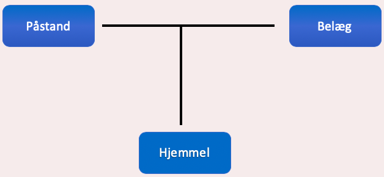
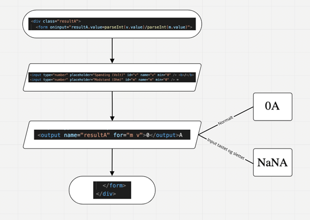

Kommunikations Reflektioner
Dansk
Ciceros Pentagram
Vi brugte Ciceros pentagram til at forstå hvem vores modtager er, og hvilken situation de er i. Før vi startede projektet, lavede vi allerførst en model af Ciceros pentagram og skrev ud for de 5 faktorer hvad hvert af dem svare til for vores projekt:
Situation: ”Vi har nogle nye 1.g’er der skal lære et naturvidenskabeligt emne, og vi skal forklare selve emnet på en forståelig måde.”
Modtager: De nye 1.g’er der ikke kender til selve emnet.
Afsender: 2 erfarne 1.g’er der skal formidle et naturvidenskabeligt emne.
Emne: Transformator fra ellære i fysik
Sprog: Vi skal bruge noget logos. Det skal være informativt, men forståeligt.
Nu hvor vi har skrevet vores aktuelle tekst, kan vi sammenligne hvad vi rent faktisk har brugt i forhold til hvad vi forventede i starten af forløbet.
Inde for sprog har vi brugt logos ved at forklare faktuel information, men også etos da vi har vores kilder på en anden underside, har vi rent faktisk fået vores læser, altså vores modtager, til at skulle stole på at vi ved noget om det her emne. Det er også forklaret på forsiden hvad formålet ved siden er, og hvorfor vi laver denne her side. Dette får de nye 1.g’er til at stole på at vi ved noget om det her emne på grund af at det er en aflevering til et studie område. Det er noget en lærer kommer til at kigge på, og derfor ville det antages at vi ikke informere dem om forkert information.
Da modtagerne ikke kender til selve emnet, skulle vi tænke det ind, hver gang vi begyndte at skrive omkring vores emne. Da de ikke kender til Ohms lov, og Ohms lov på nogle punkter indgår i transformator, skal vi først introducere dem til Ohms lov, da de ikke kender til vekselstrøm, skal vi også introducere dem til hvad vekselstrøm er. Dette er fremvist på vores side, da vi ikke kunne skrive ligesom i en normal fysikrapport hvor vi antager vores modtager har noget viden om emnet. Vi måtte forklare hvad spænding, strøm og modstand er helt fra bunden, så de nye 1.g’er ved præcist hvad det er. På denne måde blev sproget informativt, men også tilrettet til at de nye 1.g’er kunne komme til at forstå hvad en transformator er.
Ciceros pentagram blev også brugt da vi lavede vores fri leg side, altså forsøgsvejledning. Da disse 1.g’er er helt nye, ville vi lave vejledningen så specifikt som muligt, så både dem der kan forstå det baseret på skrift, og dem der kan forstå det baseret på det visuelle, kan begge følge med. For at de også rent faktisk kunne lærer noget, skrev vi også nogle spørgende spørgsmål, så de kunne bruge den viden fra den informative tekst til at forklarer hvorfor der er en forskel mellem de målte resultater og de teoretiske.
Toulmins argumentationsmodel

På vores underside ”Hvad er en transformator?” har vi en påstand om: ” For at kunne forstå hvad en transformator er, skal du først forstå hvad Ohms lov er.” belægget til denne påstand var ” Ohms lov beskriver sammenhængen mellem spænding, strøm og modstand i et elektrisk kredsløb.” ud fra disse to kan vi finde sammenhængen, altså den usagte hjemmel, at hvis du vil forstå emnet om transformator, skal du først have lært om hvad spænding, strøm og modstand er.
Et andet eksempel hvor Toulmins argumentationsmodel gælder, er ved påstanden under Vekselstrøm: ”Vekselstrøm er hvad der kommer ud af vores stikkontakt.” hvor belægget er: ” Grunden til at der bliver brugt vekselstrøm over jævnstrøm, er at jævnstrøm altid går i den samme direktion, den har altså fast polaritet, mens vekselstrøm, som nævnt, hele tiden skifter retning, og kan derfor gå frem og tilbage i strømkablerne.” ud fra dette kan vi komme til konklusionen af hjemmelen må være: Vekselstrøm er godt i stikkontakter, da strømmen skifter retning og kan gå frem og tilbage i strømkabler.
Det sidste eksempel vi vil fortælle om, er under emnet om Transformator, er der en påstand om at ”En transformator bliver brugt til at udsende vekselstrøm med høje spændingsforskelle over lange afstande.” Dette er fulgt med dens belæg: ”Dette bliver gjort ved brug af en jernkerne, altså en magnetisk kerne, med to spoler der er vinklet rundt om jernkernen.” Ud fra dette er hjemmelen altså: Vekselstrøm kan sendes over lange afstande, ved hjælp af en transformators opsætning.
Kommunikation og IT
Vores iterative process
Assess
Da vi først startede dette projekt gik vi ind i det og tænkte det som en case. ”Vi skal lave en hjemmeside om transformator fra ellære der er forståeligt til 1g’er.” Derfra begyndte vi at overveje hvem vores målgruppe var ved hjælp af Ciceros pentagram (Se Dansk). Efter vi havde det, blev det nemt at vide hvordan vi skulle skrive selve teksten sammen med hvilke design vi skulle lave. For det meste blev assess-fasen brugt på inspektion metoder, altså selv kigge på produktet og bedømme om det så ud til at være forståeligt. Da vi ikke havde nok tid til at besøge en 9 klasse til user tests, var det den eneste måde vi kunne assess det før vi gik videre til at designe igen og derefter build.
I vores assess-fase, bedømte vi også os selv på hvilket niveau af programmering vi gerne ville bruge, og der kom vi frem til at for vores præsentationslager skulle vi bruge HTML og CSS og for vores logiklager skulle vi bruge JavaScript.
Design
Vi har generelt fokuseret på de 5 ”core” design principper, og hvordan vi kunne implementere dem i vores design. For eksempel, når det kommer til Kontrast princippet, har vi fokuseret på at Constrast of colors og contrast of size. Contrast of colors blev brugt til at få de interaktive opgaver til at stå ud fra den blå baggrund. Constrast of size er blevet brugt for at kunne fortælle en titel fra en paragraf og en overtitel fra en under titel. Dette kan ses når vi bruger H1 for overtitel og har ændret dens font-size til at være ___ mens H3 er blevet ændret til font-size ___ til at være en klar undertitel for læseren.
Repetition har også været et fokus, specielt med vores indholdsboks, som er den store hvide boks der indeholder alt den information vi gerne ville fortælle læseren. For at kunne give en velkendt følelse når man kigger på vores hjemmeside, valgte vi at bruge den samme baggrundsfarve og samme indholdsboks for repetitionen. Sammen med dette har vi også fået lavet en farvepalet, med følgende farver:
Alignment kunne havde blevet gjort bedre når det kom til undernavigationen ved logbog & Selvrefleksion og ved Litteraturliste & Bilag. Da den del ikke var gennemtænkt og kom til en eftertanke, ser det lidt underligt ud i forhold til de pages der ikke har en undernavigation. Men vi brugte alignment f.eks ved at lave margin-left og margin-right for paragraferne til 60px.
White space, både makro og mikro, blev gennemtænkt i design processen, da der skulle laves wireframes. Makro white space blev selvfølgelig brugt rundt omkring større objekter, såsom at paragrafferne skulle være et stykke væk fra siderne af indholdsboksen på 60px. Eller at der i toppen og bunden af indholdsboksen skulle havde white space imellem content og siderne, dette blev gjort med 20-30px margin-top og margin-bottom.
Selvfølgelig blev mikro white space brugt ved brug af line-height funktion, så vores tekst ikke stod for tæt eller helt op ad hinanden. Line-height blev sat på 25px.
Som sagt, for design metoder har vi brugt wireframes og sketching, altså kvalitative design metoder. Allerførst sketches vi ideen til hvordan billeder skulle se ud på vores side, sammen med de forskellige head lines. Følgende sketches blev lavet:


Wireframes blev lavet derefter så den der skulle designe kunne få en forståelse af hvordan det skulle se ud, og derfor ville vi begge vide, lige meget hvem der designet, hvordan de forskellige opgaver skulle se ud.
Allerførst skulle der laves en wireframe for selve vores underside omkring transformatoren, ud fra de sketches vi havde lavet, kom dens wireframe til at se sådan her ud:
Denne wireframe gav os en generel ide om hvordan vi gerne ville have det endelige produkt til at se ud. Vi vidste at vi gerne ville, på en eller anden måde, få to elementer til at kunne være lige ved siden af hinanden. Vi vidste at der skulle laves en interaktiv opgave, der skulle være forståelig til de nye 1.g’er og let at bruge.
Ud fra denne wireframe kunne vi lave en wireframe for hvordan den interaktive opgave skulle se ud (Se for neden.)
Ideen var at der skulle havde været tre bokse der ville hurtigt vise de tre formler igen, og derefter ville de kunne indsætte værdierne ind i boksene for volt, spænding og modstand, hvor de derefter kunne se resultaterne i en resultats-boks.
I selve build-fasen oplevet vi at det var lidt svære at få denne wireframe til virkelighed, så for at få det til at virke lavede vi et nyt design
(Se for neden) med tre separate sektioner for hvert af de 3 måder formlen for Ohms lov kan blive brugt på. Sammen med resultaterne for beregningen af strøm, spænding og modstand lige ud fra dem. (Se koden under Programmeringsteori.)
Wireframe for gamle design af den interaktive opgave sammen med den nye sketch:

vi lavede også en wireframe for selve kommunikationsreflektionerne, men da den blev ekstremt lang, må du se under bilag for billederne af dens wireframes.
Build
Selvom build-fasen for det meste gik ud på at lave selve hjemmesiden og dens layout baseret på design-fasen, så blev metoden Prototype også brugt. Prototypen var ikke for user testing, men for at kunne assess om den interaktive opgave kunne bruges, måtte vi lave en kopi af vores side, så vi ikke ville få noget i vores produkt-kode til at gå galt, og derfra indsætte den interaktive opgave, assess (altså se hvad der skal rettes op på), design (bedømme designet) og til sidst ændre det i build-fasen igen, så den kan gå videre til at blive implementeret i vores produkt-kode.
Programmeringsteori
Rutediagram over JavaScript koden

I toppen af rutediagrammet er starten på koden som skal udregne strømmen. Den er sat ind i rutediagrammet med en oval byggeklods, som fungerer som en start eller slutning på en bestemt kode. Heri er der en div med en class som blev brugt i vores CSS. Derudover er der en kode der siger at resultA skal være værdien af v divideret med værdien af m.
Den næste byggeklods i rutediagrammet er en rombe, som indikerer at her er der enten inputs eller outputs - i det her tilfælde inputs. Her er to felter givet et navn og id, en minimumværdi. Felterne kan kun udfyldes af numre, dog så har den en placeholder bestående af tekst. En placeholder er en udfyldning, som vil stå der inden numre er sat ind.
Den andensidste byggeklods er igen en rombe, dog så indikerer denne et output. Outputtet siger at resultA af værdierne for m og v skal vises der. Den starter på 0 når der ikke er noget der er indtastet, men hvis noget er indtastet og slettet igen, så vil den vise NaN i stedet for, som står for ”Not a Number”.
I den sidste byggeklods, formet som en oval, slutter koden med form og div.